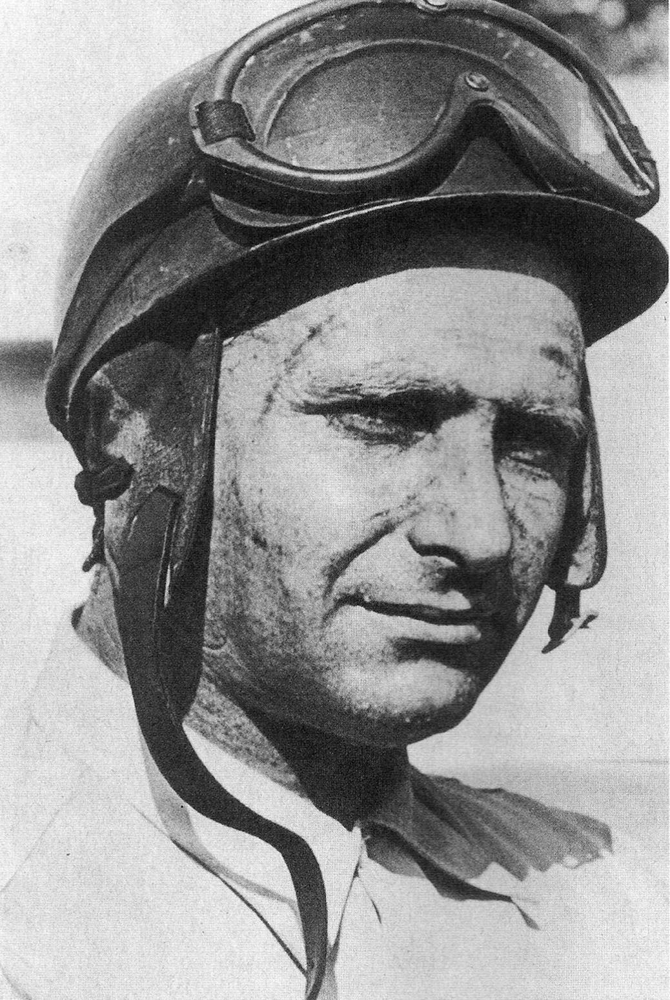
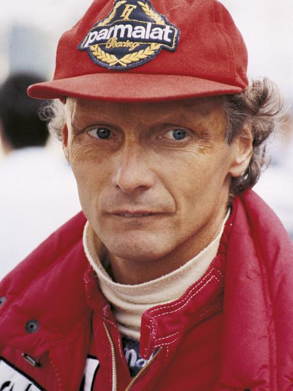
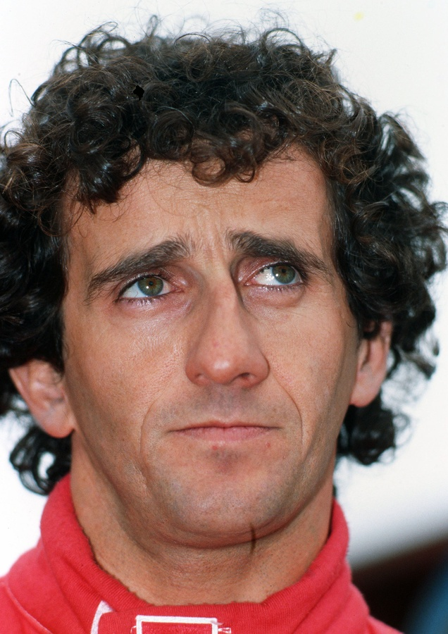
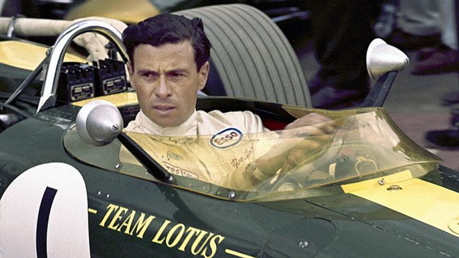
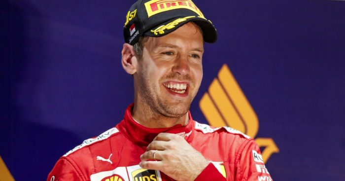

Over an almost 70 year history, Formula One fans have seen hundreds of drivers compete in the top flight of international open-wheel motorsport. In that time, there has little consensus on who may be considered the single greatest driver in history.
Rules and technology change quickly in the world of Formula One. What was possible for a driver to achieve in one era and with a certain team may not be comparable to another driver in another time, with different technology. However, certain drivers have demonstrated the speed, courage, wits, and luck to break records, rack up wins, seize championships, and demonstrate to the world that they are worthy of motorsport legend.

Juan Manuel Fangio
- Years Active: 1950-1951, 1953-1958
- Nationality: Argentina
- Wins: 24
- Podiums: 35
- Fastest Laps: 23
- Championships: 5 (1951, 1954, 1955, 1956, 1957)
- Teams: Alfa Romeo, Maserati, Mercedes, Ferrari
- Juan Maneul Fangio’s record five World Championships stood for 47 years. Additionally, he retains the highest winning percentage in Formula at 46.15%. a serious accident injury at Monza in 1952, Fangio returned to racing the next year and went on to claim four consecutive World Championships. His last win at the Nürburgring in 1957 was the result of a stunning charge from third to first place after a disastrous pitstop.

Sir Jackie Stewart
- Years Active: 1965-1973
- Nationality: United Kingdom
- Wins: 27
- Podiums: 43
- Pole Positions: 17
- Fastest Laps: 15
- Championships: 3 (1969, 1971, 1973)
- Teams: BRM, Matra, March, Tyrrell
- The “Flying Scot” holds an important legacy in motorsport beyond his three World Championships with Matra and Tyrrell. Sir Jackie Stewart campaigned for meaningful improvements in racing safety after he suffered a serious crash at Spa-Francorchamps in 1966. Some of his advocacy included mandatory seatbelts, full-face helmets, safety barriers, and on-track emergency medical services.

Michael Schumacher
- Years Active: 1991-2006, 2010-2012
- Nationality: Germany
- Wins: 91
- Podiums: 155
- Pole Positions: 68
- Fastest Laps: 77
- Championships: 7 (1994, 1995, 2000, 2001, 2002, 2003, 2004)
- Teams: Jordan, Benetton, Ferrari, Mercedes
- Michael Schumacher still maintains the record for most wins, most World Championships, most fastest laps, and most races won in a single season. He won five of his World Championships consecutively with Ferrari at the beginning of the 21st century. Although an unsuccessful return to Formula One between 2010 and 2012 with Mercedes dampened his impressive win percentage, Michael Schumacher remains a giant of the sport.

Ayrton Senna
- Years Active: 1984-1994
- Nationality: Brazil
- Wins: 41
- Podiums: 80
- Pole Positions: 65
- Fastest Laps: 19
- Championships: 3 (1988. 1990. 1991)
- Teams: Toleman, Lotus, McLaren, Williams
- A brilliant charge through field from 13th to 2nd at the dangerously wet 1984 Monaco Grand Prix announced the talent of Ayrton Senna to the world of international motorsports. His three World Championship seasons with McLaren were some of the most dominant in the sport’s history, and his rivalry with teammate and fellow World Champion Alain Prost remains the stuff of F1 legend. Tragically, Ayrton Senna died at the age of 34 as the result of an accident during the running of the 1994 San Marino Grand Prix.

Lewis Hamilton
- Years Active: 2007-Present
- Nationality: United Kingdom
- Wins: 82
- Podiums: 148
- Pole Positions: 87
- Fastest Laps: 46
- Championships: 5 (2008, 2014, 2015, 2017, 2018)
- Teams: McLaren, Mercedes
- It is often difficult to tell how current drivers’ legacies will hold up in the future, but the reigning Formula One World Champion has indelibly made his mark on the sport. His first championship in 2008 at the age of 22 made him the youngest World Champion at the time. His skill as a driver and the technical mastery of Mercedes during the turbo-hybrid era has seen to an additional four World Championships, with a likely fifth on the way. If this performance continues, he will soon surpass the win records still held by Michael Schumacher.

Niki Lauda
- Years Active: 1971-1979, 1982-1985
- Nationality: Austria
- Wins: 25
- Podiums: 54
- Pole Positions: 24
- Fastest Laps: 24
- Championships: 3 (1975, 1977, 1984)
- Teams: March, BRM, Ferrari, Brabham, McLaren
- Niki Lauda’s massively impressive career as a driver and astute engineer was punctuated by a horrific accident at the 1976 German Grand Prix. Despite suffering severe burns, Lauda returned to racing not six weeks later and lost the championship by a point to his rival James Hunt. Lauda retired after 1979 and returned to racing with McLaren, where he won his third World Championship. He remains the only driver to win World Championships at both Ferrari and McLaren. When he passed away in 2019, he was serving as a non-executive chairman of the massively successful Mercedes team.

Fernando Alonso
- Years Active: 2001, 2003-2018
- Nationality: Spain
- Wins: 32
- Podiums: 97
- Pole Positions: 22
- Fastest Laps: 23
- Championships: 2 (2005, 2006)
- Teams: Minardi, Renault, McLaren, Ferrari
- A karting prodigy, Fernando Alonso debuted with the Minardi team, but moved to Renault, where he won his back to back World Championships. During his time at Ferrari, Alonso narrowly lost the Championship to Sebastian Vettel two times. Alonso continues to prove his talent in endurance races and IndyCar.

Alain Prost
- Years Active: 1980-1991, 1993
- Nationality: France
- Wins: 51
- Podiums: 106
- Pole Positions: 33
- Fastest Laps: 41
- Championships: 4 (1985, 1986, 1989, 1993)
- Teams: McLaren, Renault, Ferrari, Williams
- "The Professor" was a calculating and effective driver and strategist. Prost is known both for his former record number of victories and his rivalry with teammate Ayrton Senna.

Jim Clark
- Years Active: 1960-1968
- Nationality: United Kingdom
- Wins: 25
- Podiums: 32
- Pole Positions: 33
- Fastest Laps: 28
- Championships: 2 (1963, 1965)
- Teams: Lotus
- Ranked by The Times as the greatest Formula driver of all time, Jim Clark achieved record numbers of race wins and pole positions. His performance at a wet 1963 Belgian Grand Prix and victory at the Indianapolis 500 are some highlights of his career. Notably, Jim Clark only raced for Lotus throughout the entirety of his F1 career. Sadly, Jim Clark was killed as the result of an accident during a Formula 2 race in Hockenheim in 1968.

Sebastian Vettel
- Years Active: 2007-Present
- Nationality: Germany
- Wins: 53
- Podiums: 119
- Pole Positions: 57
- Fastest Laps: 38
- Championships: 4 (2010, 2011, 2012, 2013)
- Teams: BMW Sauber, Toro Rosso, Red Bull, Ferrari
- Sebastian Vettel currently holds the records for youngest driver to become World Champion and most consecutive race wins, and formerly held the record for youngest pole-sitter and race winner. He and Red Bull won four consecutive Drivers' and Constructors' champions from 2010-2013. Vettel currently drives for Ferrari, as did his hero Michel Schumacher.